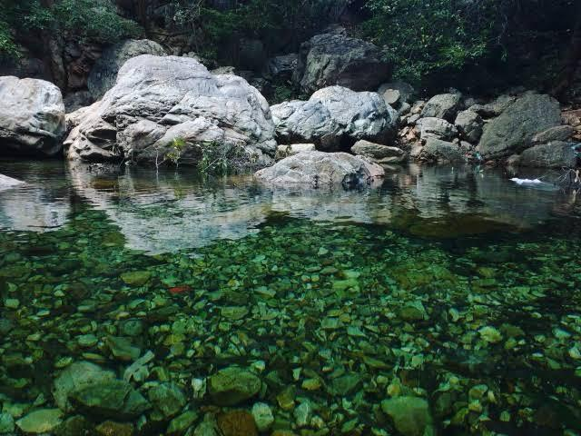
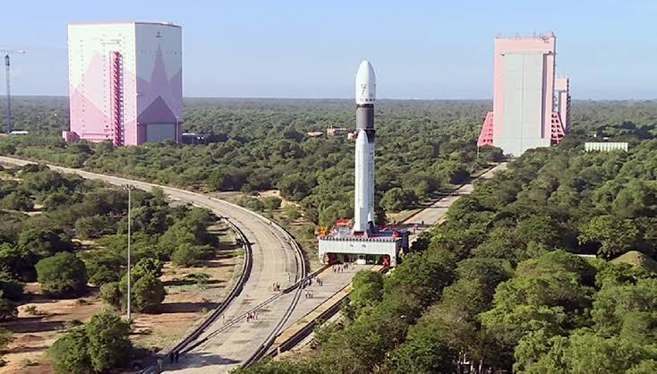

Top 3 destinations near iiits according to me:
Also called as Ubbalamadugu Falls, the Tada Falls is just the right destination if you like trekking, camping or just gazing on the gushing waterfall.
The 60 km long Pulicat Lake is the second largest brackish water lake in India. The Pulicat Lake Bird Sanctuary is a popular abode for several migratory bird species.
Just a short drive away is Sriharikota, known for the Satish Dawan Space Centre. If you want to witness a rocket slicing the skies, this is the place to be
